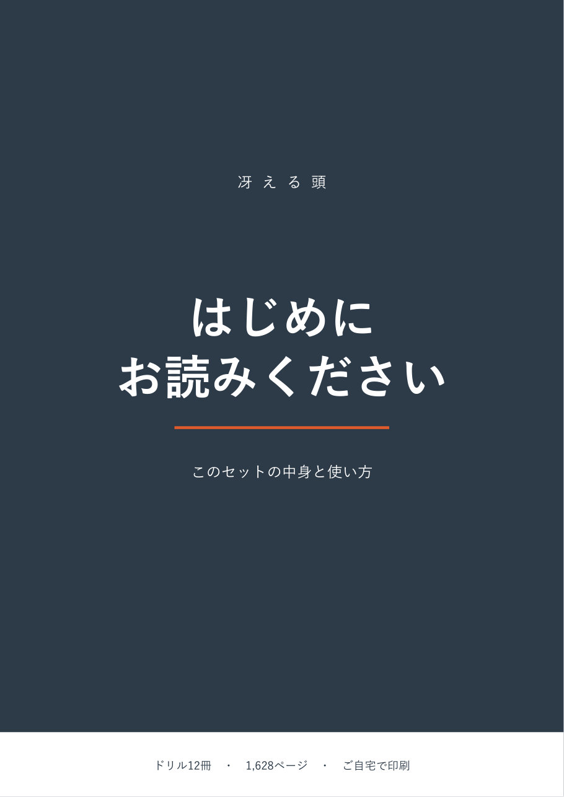

ご購入のドリルと特典
始め方
- まず、短いガイド「はじめにお読みください」を開いてください。
- メインのドリル5冊の最初のページを印刷してください。A4サイズ、白黒です。
- 「30日プラン」に沿って進めてください。ほかのドリルで毎日何をするかが書いてあります。
- ドリルが終わったら、もう一度印刷してください。ファイルはずっとお手元に残ります。
ご自身とご家庭内での利用に限ります。転売・再配布は禁止です。
メインのドリル5冊と特典7冊。すぐに印刷できます。

ご自身とご家庭内での利用に限ります。転売・再配布は禁止です。